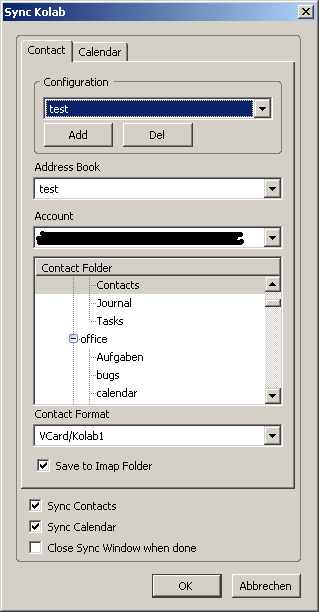

To open the configuration go to Tools->Extensions, then select the synckolab extension and click on options (see image).

- Select the address book to sync with (a list of available address books is shown)
- Select the email account to sync with (has to be an imap account)
- In the list of folders, select an imap folder to sync with
- Save to Imap Folder: if not selected the syncronisation will work one way, no data will be changed on the imap folder (no new messages will be added/nothing deleted) the contacts will be changed
- Sync Contacts: if not selected, the contact synchronisation will be skipped
- Sync Calendar: If not not selected, the calendar (and todo) synchronisation will be skipped

- Select a calendar to sync with
- select the email account to sync with (has to be an imap account)
- In the list of folders, select an imap folder to sync with
- Save to Imap Folder: if not selected the syncronisation will work one way, no data will be changed on the imap folder (no new messages will be added/nothing deleted) the calendar will be changed